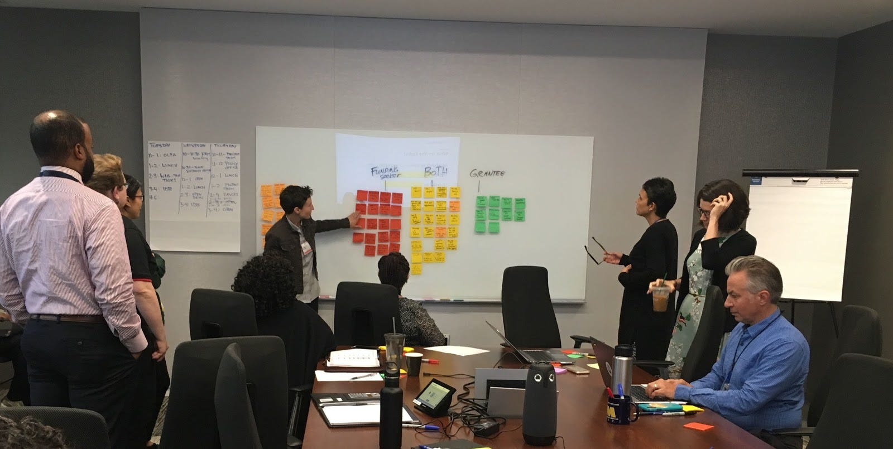
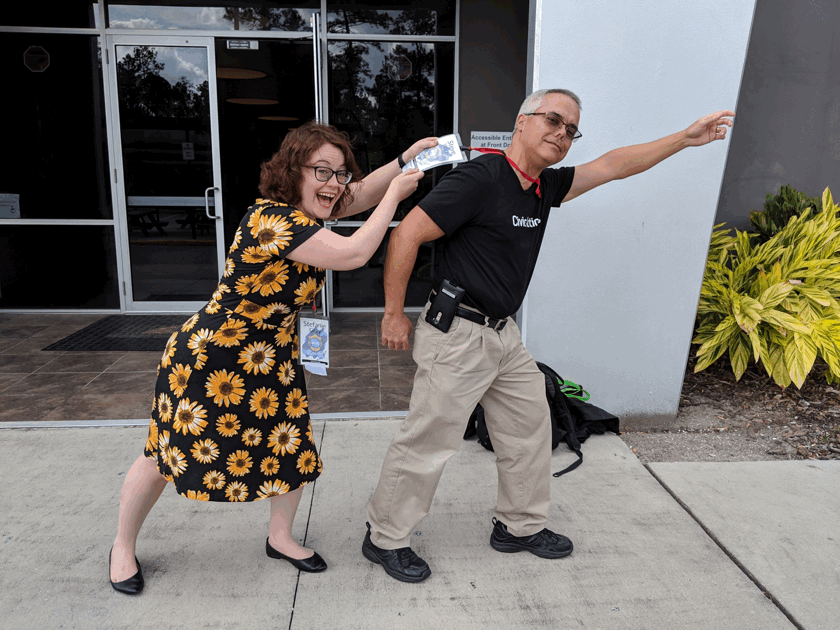
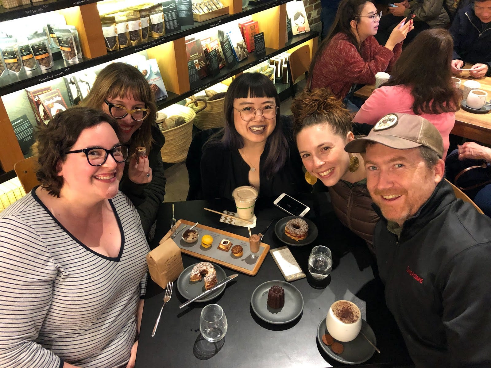
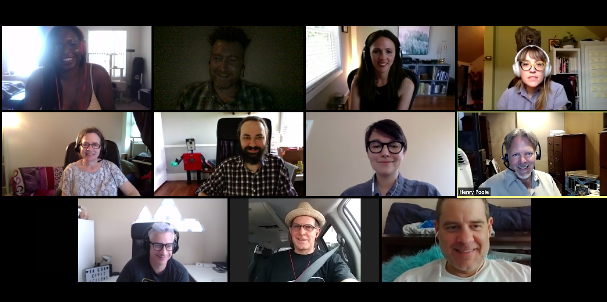
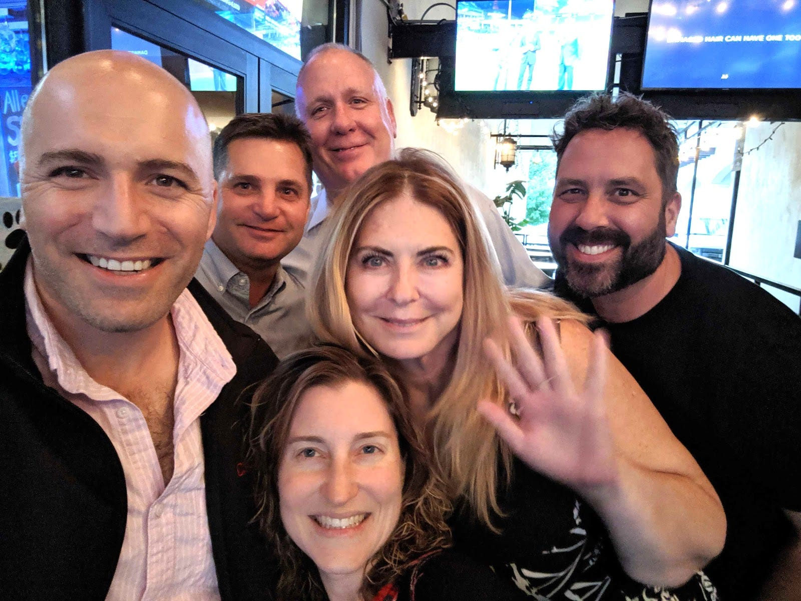

How a 30-second ritual keeps our team empathetic and productive
As a distributed team working with government clients and partner firms, we’re always looking for ways to improve our agile process. We also care about humans a lot, and we know that velocity and work quality are directly tied to healthy communication and empathy among all the people on a project. The ideal state of creative communication in scrum teams has been referred to as ‘flow.’

A few years ago as our team was rapidly growing, we sought to create a practice that would help us maintain our culture of transparency and connection, while empowering people to be honest about their energy and mental capacity on any given day. We wanted to keep our collaboration flow healthy, even as we added more folks to our team.
We came up with the idea to create a quick, simple, and consistent anchor that could be easily integrated into one of our typical ceremonies, the daily stand-up meeting. Without derailing the meeting, it would allow us to say, “I am more than just this story,” and honor the whole person.
Enter the balance score.
What is a balance score, anyway?
A balance score is a numeric representation of how balanced we feel in the honoring of our priorities at a given moment. By ‘balanced’ we don’t mean simply ‘happy’ or ‘not working too much overtime’. It’s possible to be in a very difficult situation — like caring for an aging parent or facing financial hardship — and still be fully present, balanced, or centered in our energy. Similarly, we can be out of balance even if things seem to be going great. Balance is about self-recognition of our own priorities and energy.
At CivicActions we use balance scores to briefly communicate how we are doing at knowing our priorities and honoring those priorities with a real understanding of the constraints of our situations. We report a number (from 1–10) to represent our balance at the beginning of check-in calls, stand-up ceremonies, and the like. This is meant to quickly give others a context for how we are ‘coming to the table’ that day.
Knowing and honoring our priorities can be examined in three contexts:
- Personal — our relationships with friends and family, our mental and physical health, our harmony with nature, and other things we care about personally
- Professional — our career goals, job satisfaction, project success, and other work-related topics
- Spiritual — our sense of a higher purpose and nurturing of our connection with the universe, however that is expressed in our lives
There is no good score or bad score. The balance score is never controlled by anyone except the person who is present in that moment and considering their balance, but it serves as a useful ‘thermometer’ for others on the team to take note of how a person is experiencing life that day and how it may affect their interactions.
How are balance scores calculated?
Each person is encouraged to give their score in a way that works best for them. This could be as simple as stating a gut feeling in the moment, with no pressure to spend much time analyzing it. If you feel like your overall balance is 7, just state 7.
For those who like to geek out about calculations, we could say the balance score is an average of two numbers, each representing how well you know your priorities, and how well you are honoring those priorities. You might be a 10 in the area of knowing your priorities, and a 6 in the area of honoring them, so your average score ((10+6)/2) would be 8.

How do balance scores help people work better together?
Over the past several years we have seen balance scores improve our ability to identify and adjust priorities in our work and personal lives, stay connected as a distributed team, and redirect potentially negative communication patterns.
Identify shifting priorities Like many digital service teams, CivicActioners work on a variety of internal and external projects, and most of us wear many hats. We have noticed that reporting balance scores can show us where we might need to shift focus or re-prioritize.
For example, I am part of several internal teams at CivicActions, and each has its own daily stand-up. One day I had a stand-up at 8:30am, followed by another at 8:45am. I checked into the first meeting and reported a balance of 9, then checked into the following one with a balance of 7 — just fifteen minutes later! I asked myself why my balance score had dropped so quickly, and realized that since my context had changed from one meeting to the next, the score had changed with it. The meeting at 8:45 was for a functional area of the team where I did not feel like I was honoring my priorities. This helped me understand that I needed to put some time and attention on this area of my work.
Stay connected as a distributed team As an almost entirely remote team (currently representing 60+ cities and multiple time zones), interpersonal connection is very important to us. Balance scores help us understand each other as fellow humans with individual struggles and victories outside of work, which makes it easier to maintain rapport and keep the creative juices flowing. We might also make decisions about work delegation based on peoples’ scores.
For colleagues we work with most often, we tend to notice the ‘average’ scores of individuals over time, and when a person has a big drop from one day or week to the next, it signals that something has shifted. Sometimes people who have noticed this shift will follow up with the teammate to see if there is anything they can do to help.
Stop patterns of assumption and blame Dissonance in human relations can get in the way of productivity. In the past, before establishing the balance score practice, we occasionally observed during check-ins that if someone on the team sounded frustrated, other folks would start constructing reasons in their head about why their colleague was irritated. Even if the assumptions weren’t true, it would start a pattern of finding fault and blaming others — whether teammates or clients. This type of pattern can amplify feelings of separateness among groups or individuals, especially for a remote team.
Balance scores help counteract this pattern because they reinforce the control (and responsibility) each person has for their own balance. If a person is dealing with a difficult situation at work or home, they can acknowledge that with their balance score, giving them the agency to see themselves as more than a victim of their circumstances — and giving the team a chance to practice empathy. We all have ‘off days’ and this is a very quick and simple way to communicate blocked flow states without derailing a fast meeting that should only last 15 minutes. No extra words are necessary to communicate that we have a balance of 5.

Sharing balance scores with clients
Wrangling government projects with their myriad stakeholders, priorities, budgets, and trade-offs can be stressful for everyone involved. We don’t attempt to deny this aspect of our work; instead, we share the balance score approach with our clients and partners as a way to improve inter-team communication and productivity. We have seen positive response from many clients, as mindfulness and other behavioral science based techniques are gaining respect in the public sector as tools for fostering leadership and creativity in employees.
Focus on people improves performance Balance scores allow us to be honest with clients about our mental/emotional capacity on a given day, which shifts the focus from “How much work can we possibly get done this sprint?” to “How much work can we reasonably do well, while reserving enough energy to pay attention to important details?” Studies show that happy employees do better work, and while balance scores are not strictly about happiness, they do help create an atmosphere where a focus on people leads to better performance. The balance scores demonstrate to our clients that by taking our own well being seriously, we are able to deliver our best work to benefit their project goals and users.
Strengthen relationships and build trust Especially at the beginning of a project, we look for ways to build trust and rapport among the various teams. Balance scores provide us with a quick way to ‘read people’ on a Scrum call and get familiar with each individual’s communication style. We’ve found that balance scores sometimes prompt deeper conversation and help us connect more personally with our client teams.
Trust is an important aspect of teamwork. Trust is developed and maintained by a combination of competence and care for others. Our competence is demonstrated through accountability and transparency practices — but as a remote team, the “care for others” bit is harder to achieve. The reporting of balance scores gives us personally, and as a group, additional insight into the full well being of one another. It provides information about others so that we can provide and receive non technical care.
Help government serve the public The movement to improve government digital services by focusing on the needs of end users has prompted many agencies to become more aware of the human elements in their workflow — and that includes the people who are designing, building, and delivering the services. The practice of observing balance scores helps us bring that human focus to every stand-up meeting. It’s a brief but powerful recognition that we are complex people working to solve complex problems, and that by having the courage to examine our mental/emotional state we can be better equipped to serve others.

The science behind balance scores
At CivicActions, we have always believed that people work best when they are functioning as an entire human being — when the connections between personal, professional, and spiritual priorities are acknowledged. We’ve seen the benefits, but why is this the case?
Neuroscientific evidence indicates that the human brain’s ability to think clearly is reduced when people have heightened fear or anxiety. One person’s emotional state can quickly spread to other team members, enhancing or diminishing velocity and helping or hindering productive conversations. Balance scores provide a quick way to acknowledge emotional states in a context that doesn’t negatively impact the group’s ability to collaborate.
Balance scores protect the health of our group communications by allowing us to acknowledge what we cannot change. It creates a safe box for any anxiety to be placed, where it doesn’t affect the work of the team.
Other neuroscientific research indicates that when a person focuses attention on their emotional state, they are strengthening neural pathways that will improve the brain’s ability to rationally think with the pre-frontal cortex. We’ve learned that the brain responds like a muscle does — parts of it can be buffed up. Balance scores are a way to collectively exercise this part of our brains, and sharing them only takes a moment.
Tips for using balance scores successfully
Expect surprising trends For a while, we captured everyone’s balance scores in a spreadsheet and analyzed the trends. We expected to observe that busy projects requiring lots of focused attention would throw people off balance, but quickly saw that was a faulty assumption. In fact, highly billable projects with lots of velocity often had the highest scores — perhaps because our team enjoys challenging, collaborative work where the priorities and impact are clear. What surprises might your team discover with balance scores?
Adjust course as necessary While the intention and ritual of balance scores has remained the same, we no longer track them over time. We found that keeping records of the scores sometimes prompted folks to ‘think too hard’ about their report, which defeated the notion of a brief, gut-level snapshot. Tracking the scores also seemed to unnecessarily inflate their importance. They are intended to be a record of a moment in time, so that’s how we use them now — for the edification of the teams who are present.
Define balance as you see fit Even though we explain ‘balance’ as a blend of knowing and honoring your priorities, there are still continual misconceptions that being balanced means a particular thing, like ‘not working weekends’ or ‘taking enough vacation’. It’s important to define your own state of balance, uninfluenced by others. Some people love to work long hours on a focused project. Some people need to work less to take care of aging parents. Some people want to spend some time growing new skills. The question is, do you know your priorities, and what are you doing to honor them?
Make a safe space At CivicActions we’re committed to creating spaces where people feel safe. It’s not mandatory for people to report balance scores if they feel uncomfortable for any reason. But we do want folks to understand that the transparency we practice is meant to empower individuals by acknowledging that it’s okay to be out of balance. Usually, people who are initially hesitant to report balance scores will start feeling more comfortable as they observe the benefits with their peers.

Stay curious Often, we are faced with hardship that is completely beyond our control. Other times, there may be things we can change about our situation. Either way, we should practice knowing the difference and focusing our attention on things that will help us feel fulfilled — that’s how we stay balanced. In the moment, as we observe our own mental/emotional state, it’s important to stay curious about all the different elements that make up our balance score. This curiosity may reveal things (new priorities) that could be explored to overcome situations we once thought were unchangeable.
Balance scores are just one of the ways we practice transparent communication at CivicActions. We see the positive results of these practices in our work with clients, where clarity and authenticity are the foundation of trust and teamwork. We’re working on impactful projects that make a difference in how government delivers services — and we’re hiring. Join us!
This story is co-authored by Melinda Burgess.